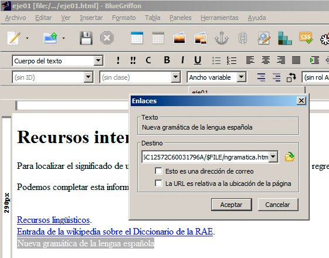

Nota
Muy importante. Antes de crear un enlace, debemos guardar la página web. Esto resulta imprescindible, si vamos a crear enlaces entre diferentes páginas web de un mismo sitio. De otro modo las páginas se crearían como enlaces absolutos, como explicaremos más tarde.
Sigamos estos pasos para crear un enlace:
- Introduciremos el texto que queremos que se convierta en enlace.
- Seleccionaremos ese texto con el ratón.
- Haremos clic en el icono Enlace (en forma de cadena).
- En el cuadro de diálogo que aparece, escribiremos la dirección de la página web o la pegaremos, si la habíamos copiado previamente desde el navegador.
- Al hacer clic en Aceptar, nuestro enlace estará ya listo.

Nota
Para probar los enlaces, debemos acceder a la previsualización en un navegador, haciendo clic en el icono Vista previa en el navegador.
Si se ha producido algún error o queremos modificar el enlace, sólo tenemos que hacer doble clic sobre el texto enlazado dentro del editor o seleccionarlo de nuevo y hacer clic en el icono Enlace.
Igualmente, para eliminar un enlace y que el texto vuelva a la normalidad, debemos editar el enlace y borrar la URL indicada.
Enlazar con un recurso específico
Normalmente podremos realizar también enlaces a recursos más concretos. No siempre queremos enlazar con una página web, sino que puede que sólo nos interese que se acceda a un vídeo, a una imagen concreta, a un archivo de audio, etc.
Para enlazar con este tipo de recursos, seguiremos exactamente el mismo método anterior. Así, cuando alguien haga clic en el siguiente enlace:
<h1>Música</h1>
<p>Haz clic para descargar <a href="http://www.rtve.es/resources/TE_SALALBA/mp3/2/8/1286271765182.mp3">el archivo de audio</a>.</p>
... comenzaría a escuchar ese archivo de audio o se descargaría en su ordenador, dependiendo de la configuración de su navegador. Si observa con detenimiento la URL, podremos observar que estamos enlazando directamente con un archivo mp3 situado en Internet.
No siempre es sencillo enlazar directamente con un recurso concreto; en muchos casos nos veremos limitados a hacer una referencia a la página web que contiene el recurso.
Nota
Más adelante conoceremos otras vías para incorporar recursos externos como vídeos, audio y aplicaciones web a nuestras páginas.
Archivos para descargar
No siempre enlazaremos con archivos que se van a mostrar en el ordenador. Podemos utilizar estas técnicas para facilitar recursos a nuestros usuarios, para que se descarguen en su ordenador. Así, si enlazamos con un documento de texto propio de un editor, un archivo zip, una presentación, etc. el navegador intentará interpretarlo; pero si no lo consigue, hará que el archivo se descargue para que el usuario pueda trabajar con él.
Pregunta de Elección Múltiple
|
Un enlace relativo es aquel en el que en su ruta no se indican todas sus carpetas.
| |
|
Un enlace relativo es aquel en el que su ruta indica algunas carpetas necesarias para llegar a él.
| |
|
Un enlace relativo es lo mismo que un enlace absoluto.
|